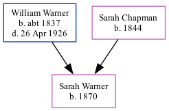

Sarah Jane Warner 1870 -
[ Home ] | [ Calendar ] | [ Surnames Index ] | [ Family History ]A laundress and the child of William Warner (a builder's laborer) and Sarah Chapman, Sarah Warner, the first cousin three-times-removed on the father's side of Nigel Horne, was born in St Peters, Thanet, Kent, England in 18701,2.
Throughout her life, Sarah lived in several places: at Burtons Cottages, St Peters, Thanet, Kent, England on Apr 3, 18811; on Magdala Road, St Peters in Thanet on Apr 5, 18913; at her birthplace in 19012; at Rumfields, St Peters in Thanet on Mar 31, 19012 (when she was living with her parents); and at Holly Lodge, Rumfields, St Peters in Thanet on Apr 2, 19114 (when she was living with her parents).
Parents
- William Robert was born c. 1837
- Sarah was born in 1844
Citations
- 1881 England, Wales & Scotland Census - Findmypast (was age 11 and the daughter of the head of the household)
- 1901 England, Wales & Scotland Census - Findmypast (was age 31 and the daughter of the head of the household)
- 1891 England, Wales & Scotland Census - Findmypast (was age 21 and the daughter of the head of the household)
- 1911 Census for England & Wales - Findmypast (was age 41 and the daughter of the head of the household)
Media
1881 England, Wales & Scotland Census - GBC/1881/0004870501
1891 England, Wales & Scotland Census - GBC/1891/0005914439
Family Tree
Generated by Ged2Site. Last updated on Jul 20, 2025